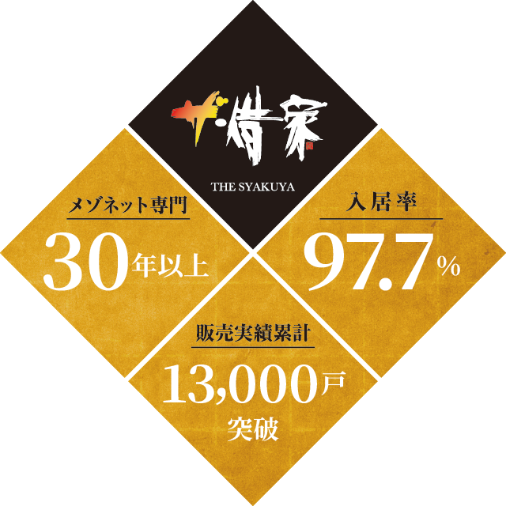

安定収益を永続させるビジネスモデルは江戸の長屋文化にありました

賃貸住宅経営には30年以上の視野が必要です。どんな商品があれば、確実に利益を生み続けられるでしょう――
私たちはそのひな形を、江戸時代の長屋に発見しました。かつての長屋は、庶民が一生涯を過ごした場所。長い付き合いの隣人関係は安心感を生み、強力な防犯対策にもつながったといいます。
また大家とオーナーが別だった点も特色です。オーナーに雇われた大家は、日常管理はもとより入居希望者を見極める役割を持ち、収益確保とトラブル防止に力を尽くしました。「ザ・借家」は、そんな長屋文化を基盤に設計された賃貸住宅です。
“我が家”として長く暮らせる環境があり、あらゆる管理業務を引き受けるプロがいるから、世相変化にも影響されず長期収益が得られる……
「ザ・借家」は、普遍的な経営モデルを求めて誕生した、古くて新しい賃貸住宅です。